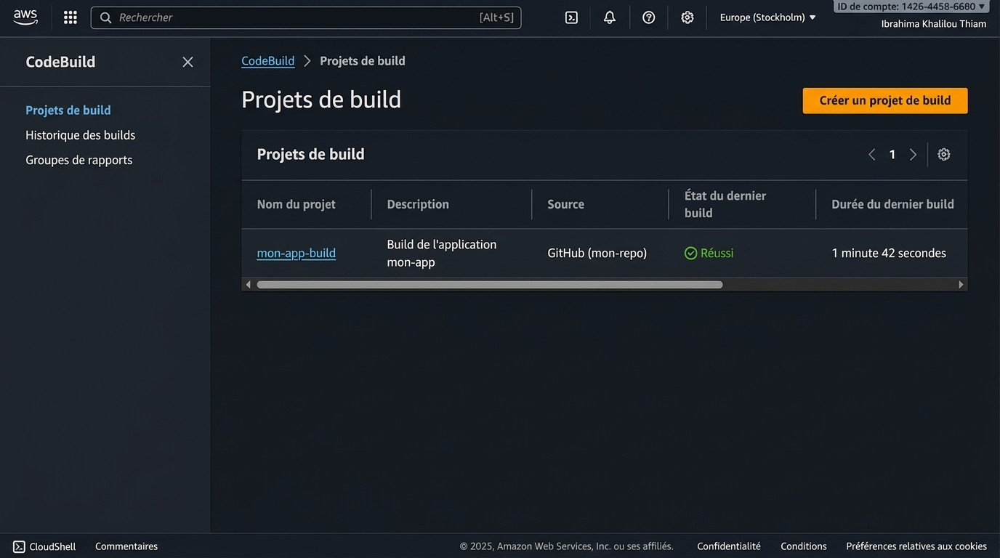

Guide complet — Master 2 Génie Logiciel
Auteur : Ibrahima Khalilou Thiam | Année 2025
AWS CodeBuild est un service de build entièrement géré qui compile le code source, exécute les tests et produit des paquets prêts à être déployés. Contrairement à Jenkins (serveur auto-géré), CodeBuild est serverless : vous ne payez que le temps de build utilisé.
buildspec.yml.Le fichier buildspec.yml est le cœur de toute configuration CodeBuild. Il
définit les phases du build, les commandes à exécuter et les artefacts à produire. Il
doit se trouver à la racine du dépôt source.
version: 0.2
env:
variables:
MAVEN_HOME: "/usr/share/maven"
phases:
install:
runtime-versions:
java: corretto11
python: 3.9
commands:
- echo "Installation des dépendances..."
- mvn --version
pre_build:
commands:
- echo "Préparation du build..."
- mvn clean
build:
commands:
- echo "Build en cours..."
- mvn package -DskipTests=false
post_build:
commands:
- echo "Build terminé."
- mvn test
artifacts:
files:
- 'target/*.jar'
discard-paths: no
cache:
paths:
- '.m2/repository/**/*'| Phase | Description | Commande typique |
|---|---|---|
install |
Installation des outils (runtimes, SDK) | runtime-versions: java: corretto11 |
pre_build |
Préparation avant le build (clean, checkout) | mvn clean |
build |
Compilation et packaging | mvn package |
post_build |
Tests, rapports, nettoyage | mvn test |
cache permet de conserver les dépendances
téléchargées (ex. .m2/repository) entre les builds, ce qui réduit
significativement le temps de build.
mon-app-build.AWS CodeBuild managed imageStandard 5.0corretto11Single build (utilise buildspec.yml du dépôt)